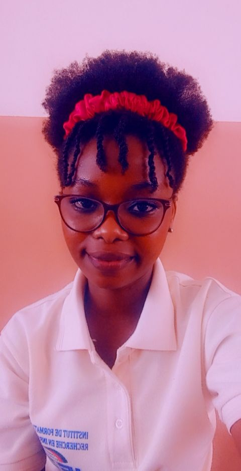

Odile Toviho LALOU
Developpeuse web front-end
laloutovihoodile@gmail.com
+22967704739
Abomey-Calavi, Benin
www.linkedin.com/in/odile-lalou-511566246
COMPETENCES TRANSVERSALES ET TRANSFERABLES
Curiosité;
Travail
d'équipe ;
travail sous pression;
Annalyser une situations critiques ;
Identifier les sources d'erreur ;
COMPETENCES TECHNIQUES ET PERSONNELLES
Microsoft Office
Excel, word
Langages de programmation
HTML,CSS,SQL,C,PHP
LOGICIELS
Adobe Illustrator,Photoshop,CINEMA 4D,Adobe Animate,After Effect
BASES DE DONNEES
MySQL,
ACTIVITE DE VOLONTARIAT
Travaux dirigés en Science de la Vie et de la Terre (SVT) aux candidat du BAC afin d'ameliorer leurs resultats scolaires et d'approfondir leurs connaissances avant lesdits examens
LANGUES
français
anglais
fon
PASSE-TEMPS
SPORT:
basketball,patinage,football
PASSIONS
codage,programmation web,voyages,music,dance
PROFIL
Je suis developpeuse web Front-end et directrice de production audiovisuelle
EXPERIENCES PROFESSIONNELLES
~Creation de page web
~Maintenance des Ordinateurs
~Création de l'application de question à choix multiple avec Toolbook 11.5
~Creation de bonhomme de neige avec 3ds Max
~Creation de l'interface d'un site de téléchargement de audio/video en ligne avec Adobe Animate
EDUCATION
2020-2023: Abomey-Calavi
Licence professionnelle en Internet et Multimedia à l'Institut de Formation et de Recherche en Informatique(IFRI) de l'Université d'Abomey-Calavi(UAC)
Bénéficiaire d'une bourse d'excellence de la Fondation MasterCard de l'Université d'Abomey-Calavi
2019-2020 Lokossa
Collège d’Enseignement Générale 1 ~Lokossa
AUTRES FORMATIONS
Formation Certifiante en ligne:
SOLOLEARN:
Certifications en HTML, CSS, SQL
VUE PLURIELLE:
Creation de page de contenu avec HTML et CSS
SALLE DE CLASSE OUVERTE:
~ Apprenez à creer votre site web avec HTML5 et CSS3
~ Convevez votre site web avec PHP et MySQL
~ Apprenez à programmer avec JavaScript
Formation extra-professionnelle:
Octobre 2021: Abomey-Calvi
Formation intensive en cours d'anglais au Centre de Culture Japonaise/ Happy Science ACADEMY
Pratique de l'ecriture ,de la lecture et de l'écoute;
Apprentissage des temps de conjugaison, de la grammaire et de l'orthographe;ecrire lettres familiales, administrave ,apprendre des chansons en Anglais
Novembre 2021: Abomey-Calvi
Formation en Design Graphic à Atalhos Communication
Formation en Leadership au profit des boursiers du programme de bourse MasterCard Fundation à l'UAC
Leadership transformationnel
Prise de parole en public;
Gestion des conflits;
Pensée critique et intelligence emotionnelle;
Confiance en soi ;
Entrepreneuriat social et solidaire. ;